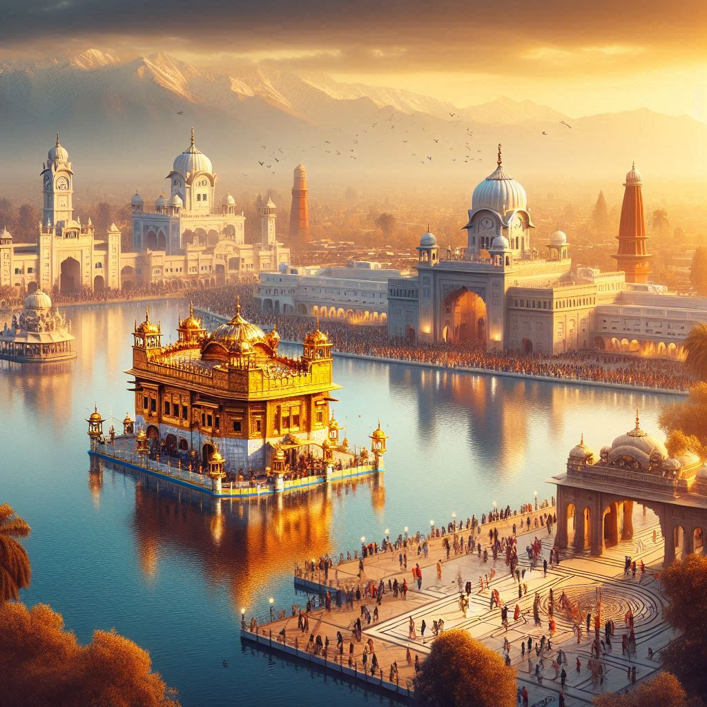
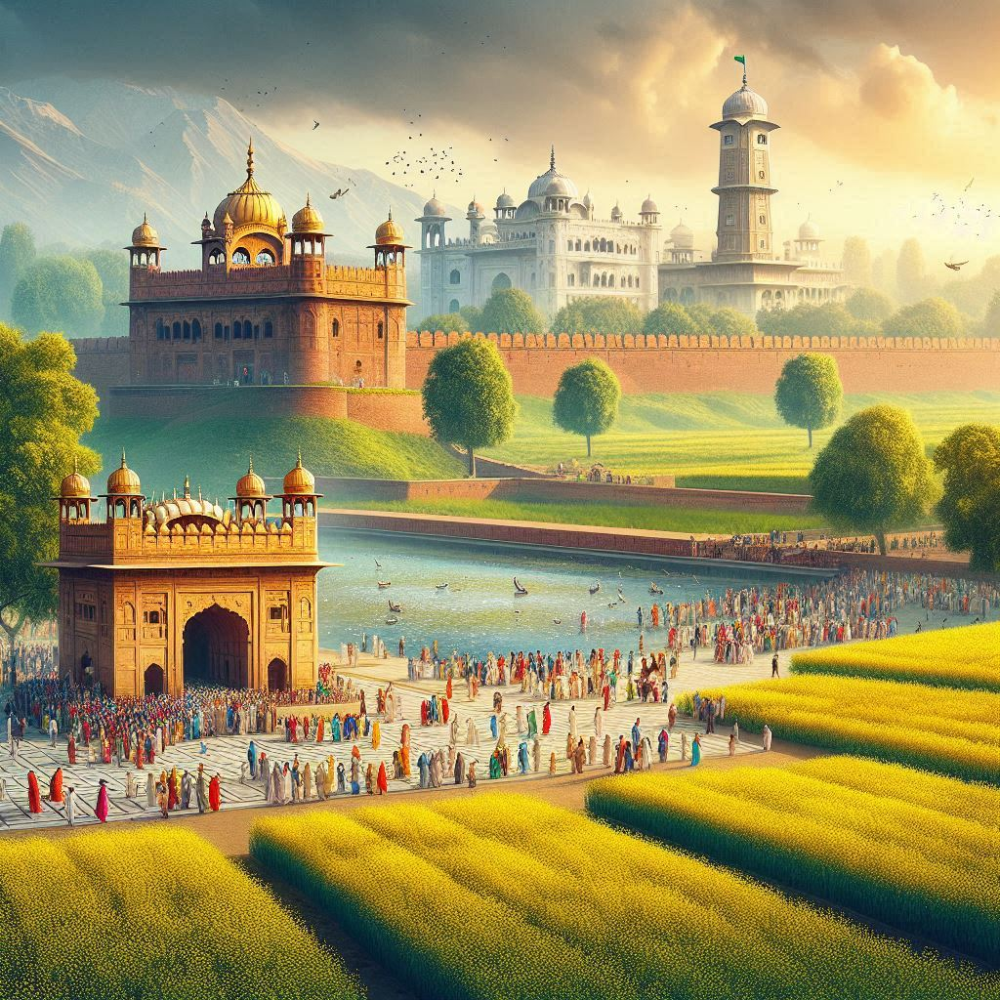

Tourism in Indian Punjab offers a rich and diverse experience, combining historical landmarks, religious significance, natural beauty, and vibrant cultural traditions. From the sacred
Golden Temple in Amritsar to the
rural beauty of its countryside, the state attracts visitors from across the world. Here's an overview of the key tourist attractions in
Indian Punjab:
1. Religious and Historical Sites
- The Golden Temple (Harmandir Sahib) – Amritsar:
The Golden Temple, or Harmandir Sahib, is the holiest shrine in Sikhism. Located in Amritsar, it is a place of deep spiritual significance and a symbol of Sikh heritage and culture. The temple is renowned for its gold-covered dome and the serene Amrit Sarovar (holy water tank). The daily rituals, prayer services, and the Langar (community kitchen), which serves free meals to thousands of people, make it a must-visit.
- Jallianwala Bagh – Amritsar:
The Jallianwala Bagh is a historic park in Amritsar that commemorates the tragic Jallianwala Bagh massacre of 1919, when British troops opened fire on a peaceful gathering of Indians. The site includes a memorial, a well, and a museum dedicated to the victims of the massacre.
- Durgiana Temple – Amritsar:
Often referred to as the "Silver Temple", the Durgiana Temple is dedicated to Goddess Durga and is architecturally similar to the Golden Temple. It is an important pilgrimage site for Hindus.
- Vaishno Devi Temple – Katra (Bordering Punjab):
Located near the Jammu & Kashmir border, the Vaishno Devi Temple attracts millions of Hindu pilgrims annually. It is dedicated to Vaishno Devi, a manifestation of Goddess Durga. The temple is located atop a hill, and pilgrims hike to the shrine.
- Patiala's Qila Mubarak and Sheesh Mahal:
The Qila Mubarak is a historical fort complex in Patiala, showcasing traditional Rajput architecture. The Sheesh Mahal (Mirror Palace), located within the fort, is known for its stunning mirror work and grand interiors.
- Gurudwara Fatehgarh Sahib:
Located in Fatehgarh Sahib, this Gurudwara marks the place where the younger sons of Guru Gobind Singh were martyred. It holds great significance for Sikhs.
2. Nature and Wildlife
- Ropar Wetland and Sukhna Lake:
The Ropar Wetland is a haven for birdwatchers, especially during the winter months when migratory birds stop over. The nearby Sukhna Lake in Chandigarh offers opportunities for boating and scenic views, making it a popular recreational spot.
- Keshopur-Miani Wildlife Sanctuary:
Located near Kathua, this sanctuary is a great spot for nature lovers. It is home to a variety of birds and wildlife species, including migratory birds in the winter.
- Ranthambore National Park (close to Punjab):
Though not located within Punjab, the Ranthambore National Park, situated in Rajasthan, is often visited by travelers from Punjab due to its proximity. The park is known for its tiger sightings and diverse flora and fauna.
3. Festivals and Cultural Events
Punjab’s festivals, known for their vibrancy, music, and dance, offer a unique cultural experience for visitors. Key festivals include:
- Baisakhi (April):
Baisakhi is one of the most important festivals in Punjab, celebrating the harvest season and the formation of the Khalsa by Guru Gobind Singh in 1699. The festival is marked by folk dances like Bhangra and Gidda, and religious processions.
- Lohri (January):
Lohri marks the end of winter and the beginning of the harvest season. People gather around bonfires, sing traditional songs, and enjoy seasonal foods like til (sesame seeds) and gajak.
- Vaisakhi (April):
A harvest festival and also a religious celebration for Sikhs. It marks the establishment of the Khalsa by Guru Gobind Singh and is celebrated with processions, prayers, and cultural performances.
- Teej (August):
Celebrated by women, Teej is a festival marking the monsoon season, where women wear colorful clothes, apply henna, and perform dances and songs.
4. Heritage and Architectural Sites
- Maharaja Ranjit Singh Panorama – Amritsar:
This museum provides insight into the life and legacy of Maharaja Ranjit Singh, the founder of the Sikh Empire. The museum has paintings, sculptures, and exhibits depicting Sikh history.
- Raja Ranjit Singh's Fort – Phillaur:
This fort is a historical site linked to Maharaja Ranjit Singh, offering a glimpse into Punjab’s Sikh Empire era and the regional history.
- Forts and Palaces of Patiala:
Patiala is home to several historical forts and palaces, including the Qila Mubarak, Sheesh Mahal, and Moti Bagh Palace, offering insight into the grandeur of Rajput and Mughal architecture.


5. Modern Tourist Destinations
- Chandigarh:
The capital city of Punjab, Chandigarh, is renowned for its modern architecture, urban planning, and green spaces. Key attractions include:
- Rock Garden: A unique garden created by artist Nek Chand, made entirely from industrial and urban waste materials.
- Sukhna Lake: A man-made lake offering boating and picturesque views of the surrounding mountains.
- Rose Garden: A vast garden showcasing various species of roses and other plants.
- Anandpur Sahib:
Known for the Virsa Vihar, Anandpur Sahib is a significant spiritual site in Sikhism and a key historical town in the Sikh Gurus' history.
6. Culinary Tourism
- Amritsari Kulcha: A popular stuffed bread served with chickpea curry.
- Butter Chicken and Sarson da Saag: Signature Punjabi dishes often served with Makki di Roti (cornmeal bread).
- Lassi: A refreshing yogurt-based drink.
- Street Food: Punjabi street food like Chole Bhature, Samosas, and Pani Puri adds to the culinary adventure of tourists.
7. Rural and Agricultural Tourism
- Agri-Tourism:
Punjab is known for its lush agricultural fields, and rural tourism provides visitors the chance to experience the day-to-day life of farmers. Tours of wheat, rice, and cotton fields, along with stays in rural villages, offer an authentic Punjabi experience.
8. Adventure and Outdoor Activities
- Trekking and Nature Walks:
The hilly terrain near Himachal Pradesh offers opportunities for trekking and nature walks, particularly in the Shivalik Hills and the Naina Devi Temple area.
- Boating at Sukhna Lake:
In Chandigarh, tourists can enjoy boating activities on Sukhna Lake with views of the Himalayan foothills.
Conclusion
Indian Punjab is a fascinating state with a rich blend of religious, cultural, and historical attractions. From the majestic Golden Temple to historic forts, from the vibrant festivals of Baisakhi to the agricultural charm of rural Punjab, the state offers a diverse array of experiences. Whether you're a history buff, nature lover, foodie, or someone looking to explore the cultural heart of India, Punjab has something to offer for every traveler.